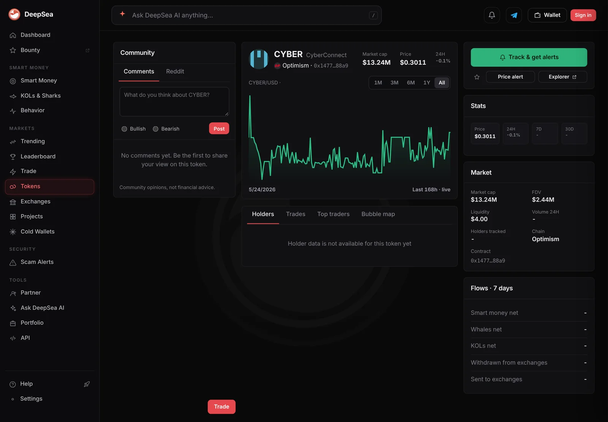

CYBER jumped 53% in about a day, then gave back 20%. Sharks on Optimism bought $668,000
CoinGecko shows the small-cap CYBER token trading four times its market value in 24 hours, with South Korea's Upbit the busiest market. DeepSea's shark wallets were net buyers on Optimism over a day in which the price fell.
Key points
- CYBER rose from about $0.252 on Thursday morning to $0.385 at 10 a.m. ET on Friday, up about 53%, then fell to $0.307 by 6:42 a.m. ET Saturday, CoinGecko data shows.
- Its 24-hour trading volume hit $154.2 million at 1 p.m. ET on Friday, against about $5 million a day earlier in the week. The token's market value is $18.7 million.
- DeepSea's shark wallets bought $668,241 of CYBER on Optimism in 24 hours and sold $277,301, across 5 wallets and 102 trades.
 What DeepSea's data shows
What DeepSea's data shows
DeepSea's live feed adds up what tracked shark wallets (large, active traders) bought and sold. In the 24-hour table made at 6:35 a.m. ET on November 7, CYBER on Optimism is the third largest net buy: $668,241 bought and $277,301 sold, a net $390,940, by 5 wallets in 102 trades.
Buying slowed in the last hour: $3,651 bought and $1,521 sold, by 2 wallets in 3 trades. DeepSea's data shows how much the wallets traded, not why, and none of the five carries a label beyond shark.

Data: DeepSea (desea.io), checked November 7, 2026, 6:35 a.m. ET.
A fast round trip
CoinGecko lists the token as Cyber (CYBER), with the same contract address on Ethereum, BNB Chain, Optimism and Cyber's own network. It traded near $0.252 at 7 a.m. ET on Thursday, November 5. By 10 a.m. ET on Friday it reached $0.385, a gain of about 53%. At 6:42 a.m. ET on Saturday it was $0.307, about 20% below that peak and down 17.1% in 24 hours. It is still up 10.5% over seven days, and 98% below its $15.79 record from September 1, 2023.
Neither CoinGecko nor DeepSea data shows what started the move.
CYBER 24-hour trading volume, CoinGecko
US$ million
Rolling 24-hour volume. Source: CoinGecko, read November 7, 2026, 6:42 a.m. ET.
Where the trading happened
At 6:42 a.m. ET CoinGecko counted $74.3 million of CYBER volume in 24 hours, about four times its $18.7 million market value. About 61 million of the 100 million tokens are in circulation.
The busiest market was the CYBER/won pair on South Korea's Upbit, at $26.0 million. Binance's USDT pair followed at $10.7 million, then Bithumb's won pair at $5.8 million. The two Korean exchanges made up about 41% of the volume CoinGecko tracked.
CoinGecko lists only one Optimism DEX market for CYBER, a Uniswap V4 pool, with about $4 of daily volume, and DeepSea's own CYBER page for Optimism showed just $4.00 of liquidity at 6:47 a.m. ET. So most of the shark trading DeepSea logged on Optimism went through pools or routes CoinGecko does not track.

What the shark buying means
A token that trades several times its market value in a day can move hard both ways, as CYBER did. The shark buying on Optimism is small next to $74 million of exchange volume, but it shows some large on-chain wallets were net buyers over a day in which the price fell.
LC Insight analysis
This section is our reading of the facts above, not a statement of fact.
- We think the Korean won pairs are the main driver here: Upbit alone traded more than the token's entire market value.
- The sharks' net $390,940 is real money but a small slice of the day's trading, so it is unlikely to have set the price.
- Volume is already down by half from Friday's peak. If it keeps falling, the move may fade as fast as it came.
What's next
- Whether CYBER volume on Upbit keeps falling toward last week's $5 million a day
- Whether the five shark wallets sell what they bought
- Any official statement from the Cyber team about the move
Disclaimer. This article is based on public information and the sources listed below as of the update time shown. It is for information only and is not investment, legal or tax advice. Figures may change as companies and authorities publish new data.